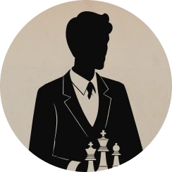
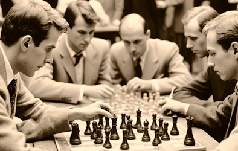

Хозе-Рауль Капабланка
Чемпион мира по шахматам
Подробнее
Чтобы поддержать Международный васюкинский турнир
посетите лекцию на тему: «Плодотворная дебютная идея»

и Сеанс одновременной игры в шахматы на 160 досках гроссмейстера О. Бендера
| Место проведения: | Клуб «Картонажник» |
| Дата и время мероприятия: | |
| Стоимость входных билетов: | 20 коп. |
| Плата за игру: | 50 коп. |
| Взнос на телеграммы: | 100 руб. 21 руб. 16 коп. |
По всем вопросам обращаться в администрацию к К. Михельсону
Будущие источники обогащения васюкинцев
